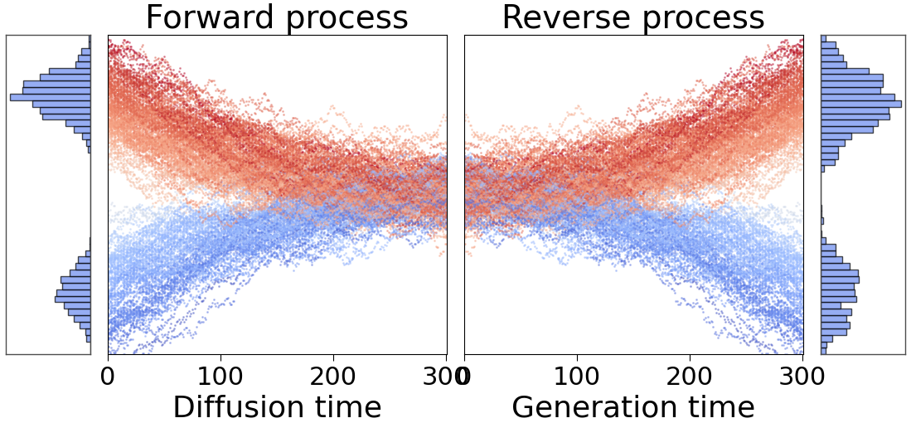

Diffusion Models
Diffusion models are a class of generative models that progressively transform simple noise into complex data distributions, such as images or climate fields. Intuitively, they work in two phases:
Forward diffusion: A clean signal is gradually corrupted by adding Gaussian noise, eventually transforming it into a nearly pure Gaussian distribution.
Reverse denoising: A neural network is trained to gradually remove the noise, step by step, reconstructing the original data distribution from the noisy signal.
This can be visualized as follows:
{kind=link}

Two original Gaussian distributions are progressively transformed into normal distribution. A denoising network then reconstructs the original distributions.
The framework implements several diffusion formulations commonly used in state-of-the-art generative modeling:
VE (Variance Exploding)
VP (Variance Preserving)
EDM (Elucidated Diffusion Models)
iDDPM (Improved DDPM)
These formulations are selectable via configuration and can be paired with different neural architectures.
EDM Preconditioning
The EDM preconditioned model stabilizes training by standardizing the scales of inputs, outputs, and targets across varying noise levels:
Where: - \(\mathbf{x}=\mathbf{y}+\sigma\mathbf{n}\) is the noisy input - \(\mathbf{y}\) is the clean signal - \(\mathbf{n} \sim \mathcal{N}(\mathbf{0}, \mathbf{1})\) is standard Gaussian noise - \(\sigma\) is the noise level - \(F_\theta\) is the underlying neural network
Coefficients:
Loss Function
For each training sample, Gaussian noise \(\sigma \mathbf{n}\) with a randomly selected noise level \(\sigma\) is added to the image. The network is trained with weighted denoising loss:
Where \(\lambda(\sigma) = (\sigma^2 + \sigma_{\mathrm{data}}^2) / (\sigma \, \sigma_{\mathrm{data}})^2\).
Sampling
High-resolution samples are generated by numerically solving the reverse-time stochastic differential equation (SDE):
Initialize with Gaussian noise \(\mathbf{x}_0 \sim \mathcal{N}(\mathbf{0}, t_0^2 \mathbf{1})\)
For each step \(i\) from 0 to \(N-1\): - Optionally add temporary noise increment - Compute denoising direction - Update latent with Euler/Heun scheme
Return final denoised sample
Theoretical Background
For theoretical background, see:
Implementation Details
Each diffusion formulation is implemented as a separate class with:
Noise scheduling: Defines \(\sigma(t)\) progression
Sampling methods: Different ODE/SDE solvers
Loss computation: Formulation-specific weighting
Conditioning: Support for various conditioning strategies
Configuration Example
diffusion:
type: "EDM"
sigma_data: 1.0
sigma_min: 0.002
sigma_max: 80.0
rho: 7.0
p_mean: -1.2
p_std: 1.2
sampling:
steps: 40
sampler: "heun"
s_churn: 40.0
s_min: 0.05
s_max: 50.0
s_noise: 1.003
Comparison of Formulations
VE: Simple, stable, good for continuous data
VP: Common in image generation, well-studied
EDM: State-of-the-art, excellent sample quality
iDDPM: Improved training stability and sample quality